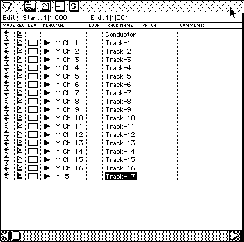
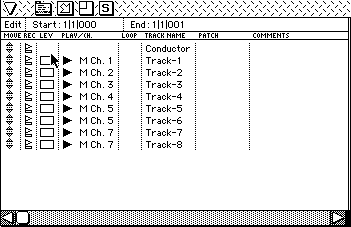

- CD-DAのフェードインアウト時、音量制御は8段階しかありません。これでは荒すぎますが、細かくなめらかに制御するには、多少の余計な手間がいります。
- マスターボリュームを使う
マスターボリュームは16段階で制御できます。しかし、マスターは最終段にありますので同時に発音している他の音も音量が変化してしまいます。
- DSPに送り、SH2から係数を書き換えて制御する。
係数のアドレス等を、把握していなければなりません。また、この方法はまだ行った前例がありません。
- ノートオン、ノートオフの入り組んだシーケンスデータにおいては、ピッチベンドのかかり具合に関してバグがあります。
- 現在、ゲートタイムの長い音の発音途中でポーズをかけた場合、その時点ですべての音はノートオフされてしまい、ポーズを解除しても残り部分は発音されません。
- Mac上のサウンドドライバはTEXT属性ですので、ネットやディスク経由でDOS環境などに持っていく場合、ドライバをテキスト変換しないように、注意が必要です。
- MIDI ConTRol Change 17,71番のEFFECT VOL, EFFECT PANは発音管理番号に関係なく有効になります。MIDI EFFECT VOL0-127の上位3ビットがEFFECT RETURN VOL0-7に対応し、また、MIDI Channelの1-16がEFFECT RETURN VOLのChannelの0-15に対応します。
EFFECT RETURN PAN の32段階の定位にはMIDI EFFECT PAN0-127の上位5ビットが対応し、また、MIDI Channelの1-16がEFFECT RETURN PAN の Channelの0-15に対応します。
そのシーケンスが終了しても設定した値は保持されたまま音色データ上の設定には戻りません。引き続きEFFECT VOL, EFFECT PANあるいはMIXER Change が発行されればふたたび変化します。
*EFFECT VOL, EFFECT PANの制御はMIDIを使用するより、MIXERを複数作成してMIXER Change で切り替える方法を推奨します。
- PAL対応について
サウンドに関してはドライバ、データともまったく変更する必要はありません。
サウンドドライバの改造などをして特殊な制御を行っている場合はテクニカルサポートまでご相談ください。
- ADPCM再生を使用する場合
ADPCMのデータには2種類あります。
- CD-XA準拠のADPCM方式
この方式では、サンプリングレイトは2種類だけ。
18.9kHz（B MODE)
37.8kHz（C MODE)
- ヘッダつきAPCM方式
サンプリングレイトは自由に設定可。
また、現状ADPCM再生のSH2の負荷はかなり高く、同時に1音再生するのが限界のようです。
- 同時発音数が32音をこえなくても鳴るべき音が発音しなかったり、発音中の音のリリースが切れることは起こり得ます。音を途切れさせたくない場合は、長いリリースを使わず、キーオンの時間を長くしてみてください。
- ステレオ/モノラル切り替えのスイッチについて
サターンのマルチプレイヤ上のステレオ/モノラル切り替えの設定をゲームに反映させる場合、SH2からサウンドWORK RAM内の設定ビットを書き換えることで行います。
設定がモノラルの時はサウンドのイニシャライズ後、SH2よりサウンドWORK RAMの0x25A00443のBit7を立ててください。
以降のすべての制御はサウンドドライバにて行います。
なお、サウンドシミュレーター上でモノラル再生時のモニターができます。モノラル時の音量バランスのチェック等にお使いください。
- 音色バンクを転送せずに、ＨＯＳＴから MIDI Direct conTRol コマンド( 09H ) により Note on イベントが発行された場合、三角波が出力されます。
例：次の MIDI Direct conTRol コマンド ( 09H ) により Note on イベントを発行すれば、ドライバは４４１Ｈzの音を出力します。
- 発音データ
- P1,P2,P3,P4 = 01H,00H,3CH,7FH
- offデータ
- P1,P2,P3,P4 = 01H,00H,3CH,00H
これを用いればサウンドドライバが動作しているかどうかの判断にもなるでしょう。
（ただし開発用ドライバ "SDDRV.TSK" では対応していません。）
- DSPの方が68000よりも、DRAMのバスにアクセスする優先順位が上です。そして、DSPは68000と同じDRAMをアクセスするため、（遅延RAMを何度もRead/WriteするTap処理のある）Delay系のエフェクトを使用すると、68000の処理が先送りされ、曲がもたったり、コマンドを受け付けなかったりしてしまう事態が起こります。
特にeLinker（拡張リンカ）のリバーブ、アーリーリフレクション等はその可能性が高く、同時使用スロットの多いFMを使用する場合も注意が必要になります。
- SCSPの発音可能な最大サンプル数は0ffffhサンプルまでです。Reverse, Alternateではピッチを変化させると読みだしアドレスがずれ、元と異なった音や、ノイズがでる可能性があります。
- シーケンス曲のテンポは、四分音符＝40〜300の範囲を超えないようにしてください。
- サターンのサウンドドライバの処理は2msecが基準ですので、１拍を480クロックと扱うシーケンスデータを作成しても、コンバート再生を行うと１拍が250相当（テンポが120の場合）の分解能になります。
結果的にクオンタイズをかけたように再生されますが、聴感上はまず問題ないはずです。
- サウンドドライバが、Version1.33Bから2.04にバージョンアップされるのにともなって、ドライバの負荷低減のため、音量計算のアルゴリズムが変更されました。このため、Version2.00以前のデータとのシーケンス再生上の互換性がなくなりました。
これは、MIDIのコントロールチェンジ7番のVolume、11番のExpressionのデータ値(0-127)に対して、音量変化のバランスが以前と若干異なる、という比較的厳密な意味での互換性ですので、基本的なサウンドドライバの動作は以前とまったく同じです。もちろんシーケンス再生時のMIDIチャンネル間の音量バランスが気にならない範囲であればシーケンスデータに手をくわえる必要はありません。
もし、過去のシーケンスデータをそのまま使用し、トラック間の音量バランスを重視する場合は、サウンドドライバのVersion 1.33Bをお使いください。
- サターン（タイタン含む）のサウンドドライバと呼ばれるものには以下の種類があります。
- SDDRV.TSK+SYSTBL.TSK（サウンドボックスでサウンド開発時のみ使用）
- SDDRVS.TSK（CartDevでの開発時、また実際のゲームに組み込み時に使用）
- SDDRVT.TSK（ST-Vタイタン用。SDDRVS.TSKとほぼ同等）
ファイル名は変えないでください。SndSimulatorは起動時にサウンドボックスか、CartDevが接続されているかをサーチして、サウンドボックスの場合はSDDRV.TSK、CartDevの場合はSDDRVS.TSKが同じフォルダ内に存在するか調べます。
存在する場合はそちらの、しない場合はSndSimulator内部の、サウンドドライバをターゲットに転送します。
Mac上でもしタイタン用ドライバを使用する場合はCartDevを接続し、ファイル名をSDDRVS.TSKに変更してSndSimulatorと同じフォルダにおいてください。
SndSimulator内部のサウンドドライバはバージョンによってまちまちですし、古い場合もありえますので、なるべく最新のサウンドドライバをシミュレータと同じフォルダにおいてください。
現在シミュレータが転送しているサウンドドライバのバージョンを知るには、アップルメニューから「このSndSimulatorについて」をみてください。
- 音色の指定方法は、サウンドRAM上の、何番目の音色バンクの何番目のVOICEであるか、という指定で行うのも、以前のサウンドドライバと同様です。MIDIコントロールチェンジ 32番のバンクチェンジで音色バンクを、プログラムチェンジによってVOICEを指定します。
現状、サウンドRAM上に存在しない音色バンクをバンクチェンジで指定した場合、音色バンクの0番がデフォルトとしてアサインされる仕様になっています。音色データを音色バンクの0番に置き、そのときサウンドRAM上には存在しない音色バンク、例えば3番のバンクチェンジを送っても、Version2.00以前のサウンドドライバでは、音色バンクの0番の音色で、サターンは正常に発音しました。しかし、Version2.00以降のサウンドドライバでは、シーケンスデータのチェックをきびしくし、そうした誤ったバンク指定をした場合エラーを返す仕様になりました。
本来、MIDIシーケンスデータにおいて、音色バンクは正確に指定すべきものです。サウンドデータ制作過程において、作業効率上、MIDIシーケンスデータの音色バンクナンバーをいじりたくない場合などは、サウンドシミュレータでマップ上にダミーの音色バンクを設定するなどして対応してください。
シーケンスデータに問題があった場合、サウンドシミュレータ上のステータス表示に以下のような値が表示されます。
| $00 | 異常なし |
| $80 | 分解能がサターンの能力を超えている |
| $81 | テンポデータがない |
| $82 | テンポデータがない |
| $83 | 指定したテンポがサターンの能力を超えている |
| $84 | シーケンスデータの中にコントロールがひとつもない |
| $85 | マップ上に存在しないバンクを指定した。 |
| $86 | 音色バンク上に存在しないプログラムを指定した。 |
| $87 | 音色バンクが設定されていない状態でプログラムチェンジを行った。 |
| $88 | Total levelに対してVolume biasの値が大きすぎる。Layerのtotal levelが規定外の範囲に設定されている。 |
| $89 | 存在しないバンクに対してミキサーチェンジを行った。 |
| $8a | 音色データのVoiceパラメータ中のPLAY MODEで、POLYモード以外を使用した。 |
| $8b | Toneエディタ上でLayerが設定されていない。 |
| $8c | 同時発音が32ヶを超過したためもっとも古いキーオンが強制的に潰された. |
| $8d | 存在しないレイヤを指定した。 |
| $8e | DSPでトラブル発生 |
| $8f | 未対応のMIDIイベントを発行した。 |
| $91 | all note off を処理した.開発時以外はエラーなので注意. |
| $92 | FM音源チャネルが多すぎて発音できないノートが発生した. |
| $93 | slotの二重アサイン（プログラムのエラー） |
| $94 | 1〜16以外のMIDIチャネルで演奏しようとした. |
| $97 | *同時発音数が多いため,リリースの終了を無視されたスロットが発生した. |
| $98 | *同一発音管理番号内での同時発音数が32を超過した.曲データ作成時の致命的なエラー. |
| $99 | すべてのスロットがFMで埋まっているためNOTE ONがキャンセルされた. |
(*)のついているものはSDDRV.TSKのみ対応しています。
- ほとんどのシーケンサはそれぞれの楽器のパートを、トラックと呼ばれる単位で扱いますが、ここでSMF（Type1）の構造上の理由から注意すべき点があります。
シーケンサ上では通常、トラックとMIDIチャンネルは独立したものですので、違うトラックで同じMIDIチャンネルを設定することができます。が、SMF（Type1）で出力するとMIDIチャンネルトラックの１から順にMIDIチャンネルの１から16までを割り振っていきます。そのため17トラック以降は無視されて発音しません。
DP1

図のTrack-17のデータは無視される。
また例えば、編集の容易さのためにノートオンデータとコントロールチェンジ（エクスプレッション、パンなど）のトラックを分割し、同じMIDIチャンネルとして出力する場合がありますが、こういった場合トラックが違うとMIDIチャンネルも変わるためエクスプレッション効果がノートデータにかからないなどの現象が起こります。
DP2

図のTrack-6のMIDIイベントはMIDIチャンネルの6として扱われるため、Track-5のMIDIイベントに影響しなくなってしまう。
そのため注意すべき点が3つほどあります。
- シーケンサでSMFで出力するときには同じMIDIチャンネルのトラックはマージする必要があります。
- 最大トラック数は（テンポトラックは除き）16までです。
各シーケンサによってSMFで出力するときの扱いかたが若干違い、同じMIDIチャンネルのトラックを自動的にマージするものや、歯抜けのMIDIチャンネルの場合は空トラックを挿入するシーケンサもあります。お使いのシーケンサを一度チェックしてみてください。
また、トラックがひとつしかないシーケンスをSMFで出力すると自動的にSMFのtype0で出力されるシーケンサも存在します。その場合は、ダミーのトラックをもうひとつつくるなどして対処する必要があります。
- MIDIチャンネルのナンバーが重要なものは、最終的なトラックナンバーを意識してデータの作成を行う必要があります。たとえば、以下のものです。
- 17番 エフェクトパン
- 71番 エフェクトボリューム
- 80番 Qーsound定位
- シーケンスボリューム（05h Sequence Volume）コマンドの機能が変更になりました。
- P1
- 発音管理番号(0-7)
- P2
- 音量 (0-255) 128を中心に値が大きいほど音量が大きくなります。以前は127がデフォルトで、音量は小さくすることしかできませんでしたが、Ver-2.00以降ではサンプリングされたときの音量よりも大きくすることができます。ただし、極端に大きな値をセットすると歪むことがありますので、注意が必要です。デフォルト値は128です。シーケンスボリュームを初期設定に戻す場合には128を設定してください。
- P3
- フェードレイト(0-255)現在のシーケンスボリュームから指定のシーケンスボリュームまで達する時間をレート(0から255)で指定します。値が大きいほど変化が遅く255で最長、1で最短となります。（0の場合はフェードはせずにシーケンスボリュームの設定のみとなります）フェードは現在のシーケンスボリュームから、指定のシーケンスボリュームに向かって行われます。指定のシーケンスボリュームが現在のシーケンボリュームより大きいか小さいかでフェードインかフェードアウトかが決まります。
シーケンスボリュームコマンドによるフェイドイン、フェイドアウトは、ノートオン中も効果がかかります。
また、MIDIのコントロールチェンジによるノートオン中のリアルタイムな音量コントロールができない、というVersion1.31以前のサウンドドライバのバグも修正されました。
- TempoConTRolの追加変更
コントロールチェンジ31番によるループ中にTempoConTRolを行った場合、ループの先頭に戻った時点で、初期のテンポにもどってしまいます。これを防ぐためにテンポ処理が３つのモードを持つようになりました。
- ノーマルモード
従来と同様のテンポ処理を行います。
- イグノアモード
シーケンススタート時のテンポのまま、シーケンス中にテンポ変更が来てもテンポを変更しません。ホストによるテンポチェンジコマンドは受け付けます。
- レシオモード
曲中のテンポ変更でもホストによるテンポ変更（従来のテンポ変更とは別コマンド）の影響を受けるようになります。
これにより以下のホストコマンドが追加になりました。
| ＄１４ テンポモード |
|---|
| Ｐ１:管理番号 | |
| Ｐ２:テンポモード | ００:ノーマル |
| ＋ :イグノア |
| − :レシオ |
| ＄１５ テンポレシオセット |
|---|
| Ｐ１:管理番号 | |
| Ｐ２:比率 | （−３２７６８〜＋３２７６７）
効果はテンポ変更と同じです。 |
またシーケンススタートにより上記テンポモードとテンポレシオのワークはリセットされます。
- コントロールチェンジ64番のダンパーについてのトラブルはVer2.00にて解決しました。特殊なデータの手直しはもう必要ありません。
- TL+VolBiasの加算結果が０以下になってはなりません。０以下になる場合は、ドライバがStatusにエラーナンバーを返し、シーケンスを再生しません。
- サウンドドライバは1ゲーム中に複数のバージョンを使用しないでください。混乱の原因になります。
- マップデータの制限について
ひとつのマップファイルには最大128マップまでもてますが、マップの情報はサウンドドライバのシステムエリアに4096Byte(1000h)までしかとれません。
サウンドシミュレータのFileメニューから「マップのバイナリーファイル作成」を行うとき、マップのバイナリーサイズが4KByte（1000ｈ）を超えた場合、SndSim（Ver.2.10以降）はアラートをだします。このときはマップチェンジをおこなっても音が出ません。
そういった場合は、マップファイルを複数に分割して対処してください。また、SndSimulatorのMake Binary Fileのメニューでサイズが表示ができますので、ときどき現在のサイズを確認してみてさい。
目安としましては、マップ中にブロック数が500個以上ありますとサイズが4KByte（1000ｈ）を超えます。
***参考*** 計算方法
１ブロックあたりのサイズは8バイトです。1マップごとにエンドコードとして１バイト加算されます。
総ブロック数が150個でマップが12個あった場合は
150×8+12×1+1=1213(<4096)
で、1213バイトになります。
| サンプル周波数 | Base Note | Fine Tune |
|---|
| 44100 | 60 | 00 |
| 40000 | 62 | 41 |
| 38000 | 63 | 55 |
| 36000 | 64 | 63 |
| 34000 | 65 | 63 |
| 32000 | 66 | 58 |
| 30000 | 67 | 44 |
| 28000 | 68 | 20 |
| 26000 | 69 | -18 |
| 24000 | 71 | 62 |
| 22050 | 72 | 0 |
| 22000 | 72 | -5 |
| 20000 | 74 | 40 |
| 18000 | 76 | 63 |
| 16000 | 78 | 58 |
| 14000 | 80 | 17 |
| 12000 | 83 | 59 |
| 11025 | 84 | 0 |
| 10000 | 86 | 40 |
| 9000 | 88 | 63 |
| 8000 | 90 | 58 |
| 7000 | 92 | 17 |
| 6000 | 95 | 60 |
| 5000 | 98 | 40 |
| 4000 | 102 | 56 |
Base Note 60で基準ピッチで再生する場合の、Base NoteとFine Tuneの設定値です。